STAM 102 :: Lecture 13 :: MSACCESS: Concept of Database- Units of database, creating database

Database
- A database is a collection of interrelated data that is organized so that it can easily be accessed, managed and updated.
- A database-management system (DBMS) is a collection of interrelated data and a set of programs to access those data.
Characteristics of Database
- Self-describing- a database gives description about itself.
- Multiple users can access the same data.
- Data exists permanently
- Data security protects the data from unauthorized access with the help of the passwords.
- Many software are used as Database Management Systems. Example: MS-Access, ORACLE etc.
Structure of Database Management System
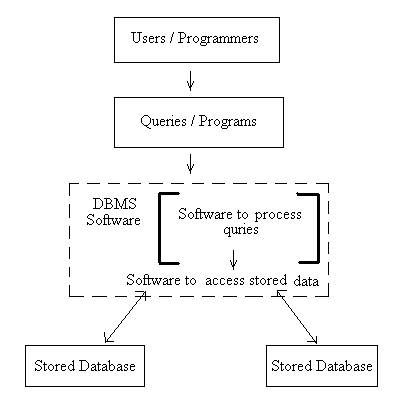
Tables
- Tables contain data
- The main components of tables are:
- Field
- Record
- A field is the smallest data item stored in one particular format.
- A record is one complete set of related field.
- Example: Following is Student table in an University database
Student Name |
ID |
STAM Mark |
AGR Mark |
PBG Mark |
Adithi |
BSA-10-001 |
98 |
99 |
95 |
Bhargavi |
BSA-10-002 |
56 |
75 |
67 |
Natarajan |
BSA-10-003 |
86 |
70 |
75 |
Madhavan |
BSA-10-004 |
78 |
79 |
76 |
- The columns in the table are fields or attributes. Fields store the smallest unit of data.
- The rows in the table are called tuple or record. The record is one complete set of relation.
Database concepts
- Data is a known fact.
- Data may be name of a student or mark scored by a student or age of a student or dat of birth of a student. Thus the type of the data varies, that if it is a name then it will contain only any combination of the alphabets, if it a mark then it will be only a number, if it date of birth then it will only be a date.
- The data types supported by the DBMS are :
- Numeric - numbers
- Alphanumeric - letters and digits
- Date/Time - dates
- Logical - logical data
- Auto number - unique value
Numeric
- Numbers only (no letters) includes numbers with decimal points.
- Numeric field can contain:
- Only the numeric characters of 0 to 9
- The decimal point
Alphanumeric
- Alphabets (letter), symbols and numbers
- Alphanumeric data can be made up of the following characters:
- Numbers 0 to 9
- Alphabets A to Z, a to z
- Special characters #, /, $, * etc.
Data/Time
- Used to specify the field contains date
Logical
- Logical data type used to store Yes or No and True or False
Auto number
- A unique value generated for each record.
Components of database
- Tables - contains data
- Queries - selected information is displayed on the screen
- Reports - formatted printed information
- Forms - screen created to add, modify, and delete records
Primary Key
- The primary key is a field in the table which uniquely identifies that particular record in the table.
- The primary key cannot have a duplicate value in the table.
- Every table should have a primary key associated with it.
Tasks associated with the tables
- Creating a table
- Specifying field names, data types, field sizes
- Adding records to the table
- Modifying data in the table
- Deleting records from the table
- Creating relationship between tables
Tasks associated with the queries
- Creating queries to obtain information
- Creating queries to update data
- Creating queries to update data
MS-Access
- MS-Access is a Relational Database Management System (RDBMS) developed by Microsoft Corporation.
- It provides the software tools to organize the data in a flexible manner.
- It provides facilities to add, modify or delete data from the database, ask questions or queries about the data stored in the database and produce reports summarizing selected contents.
Creating Database
- Click on Start button à Select All Programs à Click Microsoft Access
- The opening screen of the MS-Access will get displayed
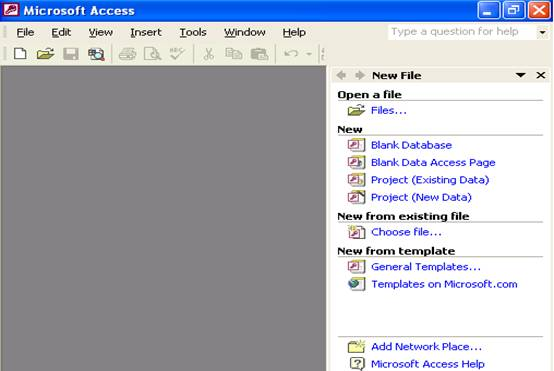
- As we are going to create a new database, in the New File window click blank database.
- File New Database dialog box will get displayed asking us to choose the location of the database and the name of the database. Enter the name of the database as crop.
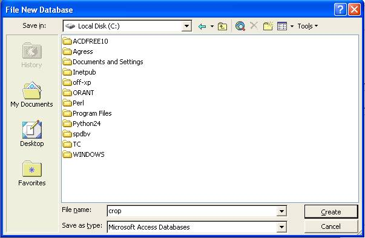
- Click Create button.
- Crop database is created and crop database window will get displayed as shown below:
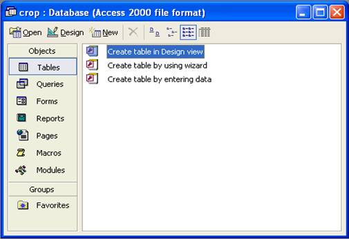
- Choose create in Design view option.
- Default name of the table is Table1 will get displayed in the title bar of the Table window.
- Enter the field name under Field Name column.
- Data type can be selected with by clicking the down arrow key in the Data Type column as shown below.
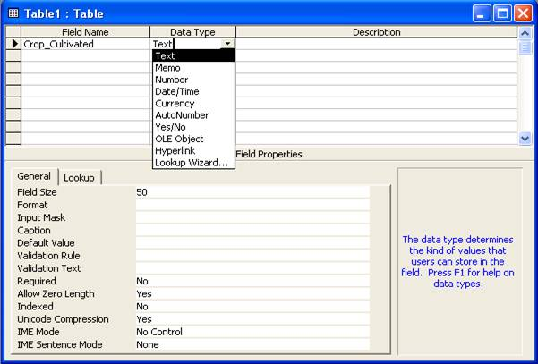
- After choosing the data type of the field set the required field size in the field size tab.
- Enter the description of the field in the Description column.
- Following the above said instructions enter the other fields in the table.
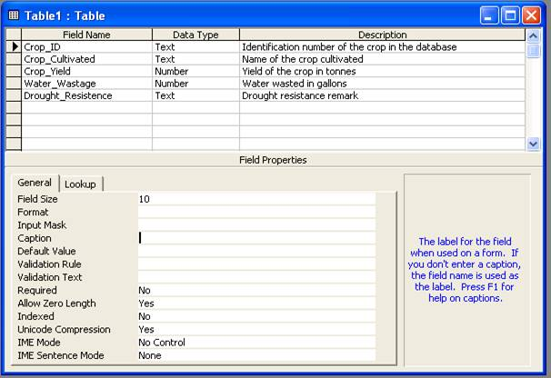
- To set Crop_ID as the primary key of the table right click the field Crop_ID.
- From the right context menu choose Primary Key option.
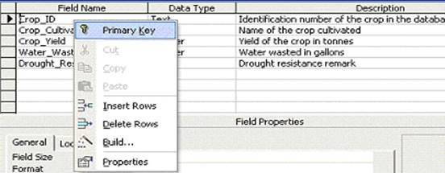
- A small picture of a key appears next to Crop_ID.
|
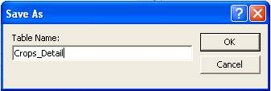 |
- Close the table by clicking on File menu and Close option.
- The Crop_detail table is displayed in the ‘Tables’ tab as shown below:
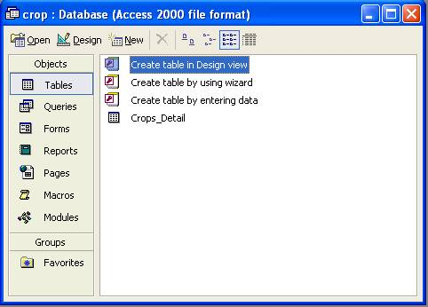
Adding Records to the Table
- In the design view under the Crop database we have created the table Crop_Detail and assigned Crop_ID as the primary key.
- To add the records right click the table Crop_Detail and select Open option.
- The datasheet view of the Crop_Detail table will get opened.
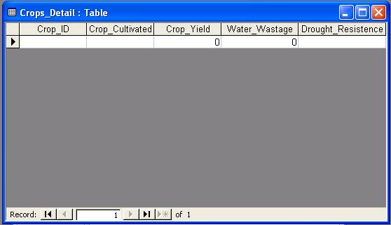
- The field names are displayed as headings and a blank row is provided to enter data.
- Enter the data in the corresponding fields. When all the records are added the screen will be as shown below:
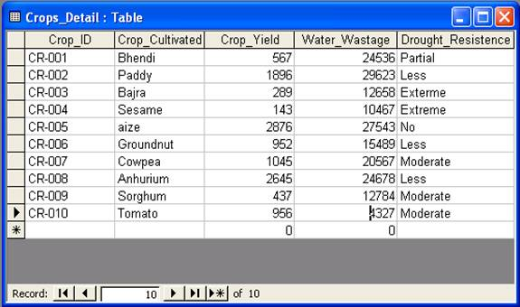
To Delete a Record from the table
- To remove the 5th record with Crop_ID CR-005 and Crop_name as aize right click on the arrow () tabin front of the record and choose Dekete option as shown below:
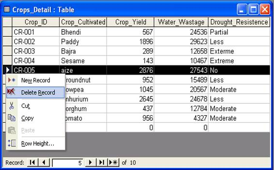
- Access prompts the user for the final confirmation because the record once deleted cannot be recalled back.
- Click on ‘Yes’ if you are sure to delete it.
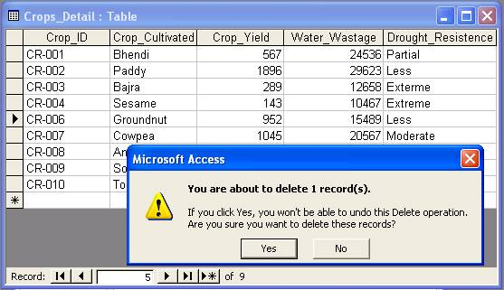
| Download this lecture as PDF here |